Reject an image by adding its slug to public/charades/charades-movies/reject.txt (append ! to keep it word-only), then re-run node scripts/genimages.mjs.
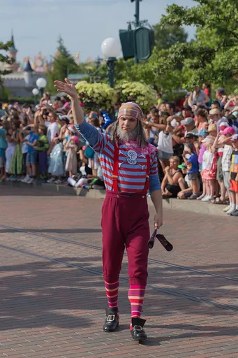
Peter Pan peter-pan CC BY-SA 4.0 · Another one of my pictures: This photograph was taken by Medium69 (William Crochot) and released under the license stated below. You are free to use it for any purpose as long as you credit the author (William Crochot), the Source (Wikimedia Commons) and the license (CC-BY-SA 4.0) in close relation to the image. Please do not upload an updated image here without consultation with the Author. The author would like to make corrections only at his own source RAW. This ensures that the changes are preserved.Please if you think that any changes should be required, please inform the author.Otherwise you can upload a new image with a new name. Please use one of the templates derivative or extract. · source
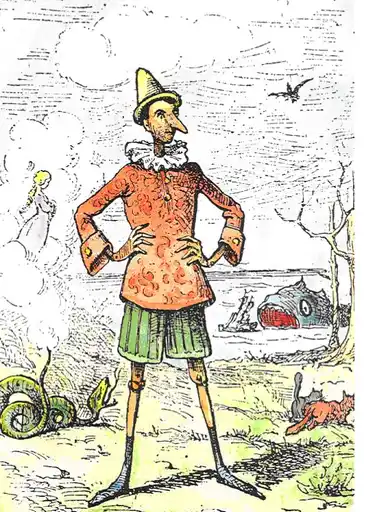
Pinocchio pinocchio Public domain · Enrico Mazzanti (1852-1910) · source
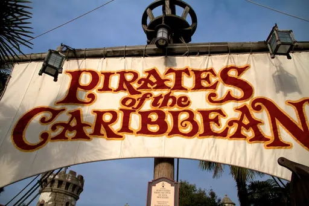
Pirates of the Caribbean pirates-of-the-caribbean CC BY-SA 2.0 · Eric RiItchey · source
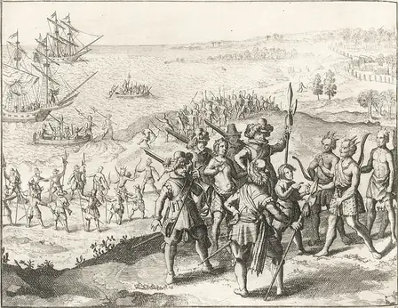
Pocahontas pocahontas Public domain · Matthäus Merian · source
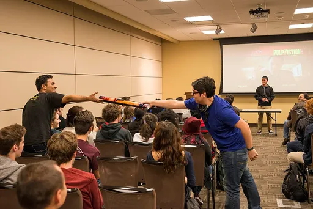
Pulp Fiction pulp-fiction CC BY 2.0 · Memorial Student Center Texas A&M University · source
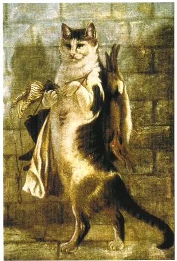
Puss in Boots puss-in-boots Public domain · Gertrude Jekyll · source
Ratatouille ratatouille Public domain · Benoit5656 · source
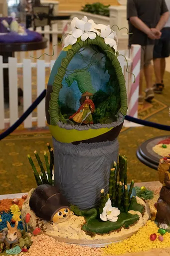
Raya and the Last Dragon raya-and-the-last-dragon CC BY 2.0 · Carter Johnson · sourceRick and Morty rick-and-morty CC BY 2.0 · Daniel Benavides from Austin, TX · sourceRio rio CC BY-SA 4.0 · Donatas Dabravolskas · source
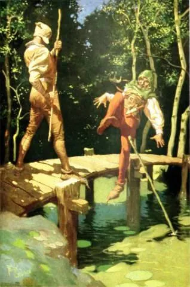
Robin Hood robin-hood Public domain · Frank Godwin · source
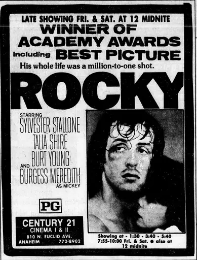
Rocky rocky Public domain · Unknown authorUnknown author · sourceRush Hour rush-hour CC BY 3.0 · Maxim Romanchuk · sourceSaving Private Ryan saving-private-ryan Public domain · Helene C. Stikkel · source
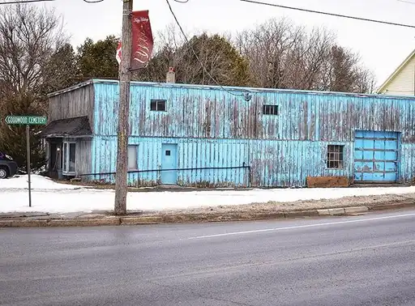
Schitt’s Creek schitt-s-creek CC BY 2.0 · JasonParis · source
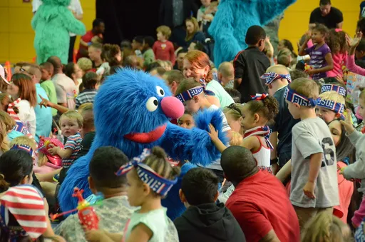
Sesame Street sesame-street Public Domain Mark · USAG Ansbach · source
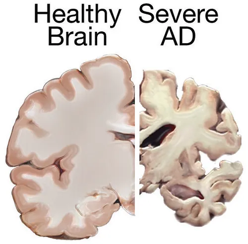
Severance severance Public Domain Mark · National Institutes of Health (NIH) · source